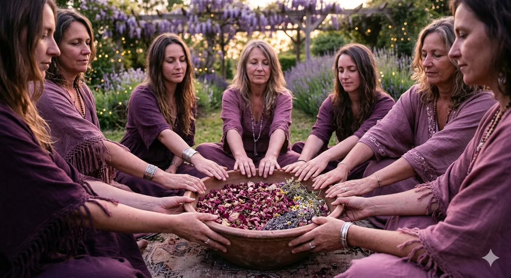

150 €
avec Céline · Art & Énergie au féminin
Au cœur de soi
Voix Sana avec Sonia
Intervenante : Céline, Thérapeute Holistique
Intervenante : Céline, Thérapeute Holistique
Céline vous guide dans un atelier Art & Énergie Sacrée entre femmes, un espace intime et bienveillant où chacune pourra déposer ce qui pèse et accueillir ce qui demande à naître.
Au programme
- Une séance de Voix Sana en demi-groupe de 4 personnes
- Cercle d'ouverture & intention du cœur
- Voyage d'art-thérapie intuitive (aucun prérequis)
- Exploration énergétique pour libérer les blocages et réharmoniser vos centres
- Méditation guidée et reconnexion à soi
- Rituel de clôture pour ancrer votre transformation
- Tirage d'oracles
Cet atelier vous invite à vous reconnecter à votre essence profonde, éveiller votre nature sacrée, libérer vos émotions en toute sécurité, et retrouver calme, clarté et alignement.